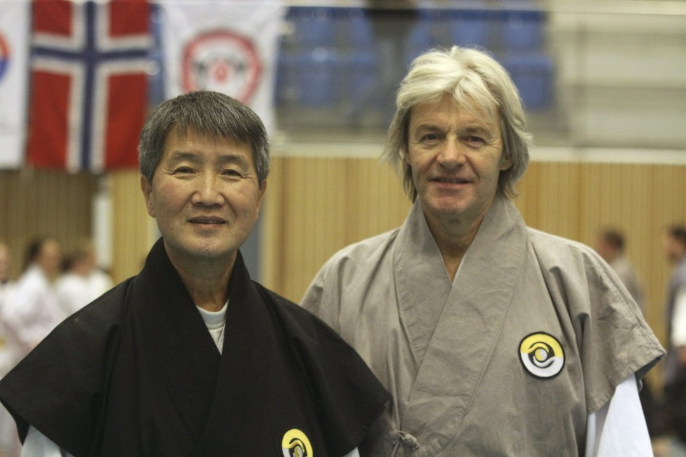

Arrangement
TTU vinterleir

TTU Vinterleir arrangeres for 18. gang. Du skal vell være med?
Klubben sender felles påmelding inn til TTU. Klubbens medlemmer melder seg på via skjema her på hjemmesiden. Betaling kan gjøres til klubbens konto Bank: 1594 46 60 469 så sørger vi for felles betaling inn til TTU.
Programmet for leieren kan lastes ned her
Vinterleieren blir avholdt i Stil Arena på Langhus som ligger rett utenfor Ski. Det er mulig for klubbens medlemmer å gradere her om det ikke skulle passe å gradere i egen klubb. Ta i så tilfelle kontakt med Geir.
Artsiom og Andrine skal opp til Sortbelte gradering. Vi ønsker dem lykke til!
Leiren holdes av; Grandmaster Cho Woon Sup (9 Dan), Master Svein Andersstuen (7 Dan), Master Erling Oppedal (7 Dan), Master Jan Terje Sletten (6 Dan), Master Allan Olsen (6 Dan), Master Kim An Na (6 Dan), Master Morten Andersstuen (5 Dan), Master Patrick Myhren (5 Dan), Master Thomas Jensen (5 Dan), Master Jon Lennart (4 Dan) og Master Jarle Wolden (4 Dan).
Fredag:
18:00 – 19:00 Registrering Ca. 19.15 Felles oppstilling med informasjon
Ca. 19.30 Dan gradering
Ca. 19:30 Fellestrening for alle
Kveldsmat
Lørdag:
08:00 - 09:00 Frokost
09.00 - 18:00 Praktisk undervisning 3 økter à ca. 1 time.
12:00 Pause/Lunsj
Klubbleder-/Kodanja-/Yudanjamøte 13.00 Felles bilde
18:00 Oppvisning
18:30 Trekking av loddsalg
19:00 Middag
20:00 Aktiviteter
Søndag: 08:00 - 09:30 Frokost / rydding
09:30 - 10:30 Fellestrening for alle
11:00 - 16:00 Gradering for Cup og Dan seremoni. Program ikke fastsatt.
11:30 Lunsj
Klikk her for påmelding!